javaweb-04-Maven&MyBatis
本文最后更新于：2022年8月15日 晚上
本文是黑马程序员的JavaWeb基础教程的配套官方笔记，仅供学习使用
Maven&MyBatis
目标
- 能够使用Maven进行项目的管理
- 能够完成Mybatis代理方式查询数据
- 能够理解Mybatis核心配置文件的配置
1，Maven
Maven是专门用于管理和构建Java项目的工具，它的主要功能有：
提供了一套标准化的项目结构
提供了一套标准化的构建流程（编译，测试，打包，发布……）
提供了一套依赖管理机制
标准化的项目结构：
项目结构我们都知道，每一个开发工具（IDE）都有自己不同的项目结构，它们互相之间不通用。我再eclipse中创建的目录，无法在idea中进行使用，这就造成了很大的不方便，如下图:前两个是以后开发经常使用的开发工具

而Maven提供了一套标准化的项目结构，所有的IDE使用Maven构建的项目完全一样，所以IDE创建的Maven项目可以通用。如下图右边就是Maven构建的项目结构。

标准化的构建流程：

如上图所示我们开发了一套系统，代码需要进行编译、测试、打包、发布，这些操作如果需要反复进行就显得特别麻烦，而Maven提供了一套简单的命令来完成项目构建。
依赖管理：
依赖管理其实就是管理你项目所依赖的第三方资源（jar包、插件）。如之前我们项目中需要使用JDBC和Druid的话，就需要去网上下载对应的依赖包（当前之前是老师已经下载好提供给大家了），复制到项目中，还要将jar包加入工作环境这一系列的操作。如下图所示

而Maven使用标准的 ==坐标== 配置来管理各种依赖，只需要简单的配置就可以完成依赖管理。

如上图右边所示就是mysql驱动包的坐标，在项目中只需要写这段配置，其他都不需要我们担心，Maven都帮我们进行操作了。
市面上有很多构建工具，而Maven依旧还是主流构建工具，如下图是常用构建工具的使用占比

1.1 Maven简介
==Apache Maven== 是一个项目管理和构建==工具==，它基于项目对象模型(POM)的概念，通过一小段描述信息来管理项目的构建、报告和文档。
通过上面的描述大家只需要知道Maven是一个工具即可。Apache 是一个开源组织，将来我们会学习很多Apache提供的项目。
1.1.1 Maven模型
- 项目对象模型 (Project Object Model)
- 依赖管理模型(Dependency)
- 插件(Plugin)

如上图所示就是Maven的模型，而我们先看紫色框框起来的部分，他就是用来完成 标准化构建流程 。如我们需要编译，Maven提供了一个编译插件供我们使用，我们需要打包，Maven就提供了一个打包插件提供我们使用等。

上图中紫色框起来的部分，项目对象模型就是将我们自己抽象成一个对象模型，有自己专属的坐标，如下图所示是一个Maven项目：
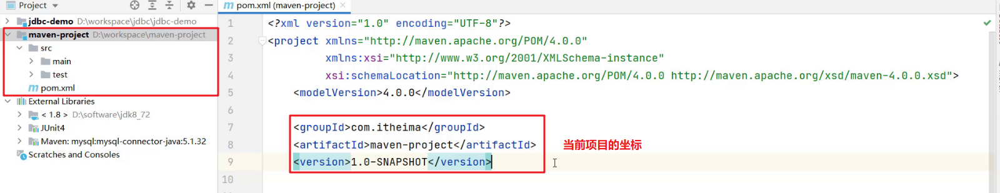依赖管理模型则是使用坐标来描述当前项目依赖哪儿些第三方jar包，如下图所示

上述Maven模型图中还有一部分是仓库。如何理解仓库呢？
1.1.2 仓库
大家想想这样的场景，我们创建Maven项目，在项目中使用坐标来指定项目的依赖，那么依赖的jar包到底存储在什么地方呢？其实依赖jar包是存储在我们的本地仓库中。而项目运行时从本地仓库中拿需要的依赖jar包。
仓库分类：
本地仓库：自己计算机上的一个目录
中央仓库：由Maven团队维护的全球唯一的仓库
远程仓库(私服)：一般由公司团队搭建的私有仓库
今天我们只学习远程仓库的使用，并不会搭建。
当项目中使用坐标引入对应依赖jar包后，首先会查找本地仓库中是否有对应的jar包：
如果有，则在项目直接引用;
如果没有，则去中央仓库中下载对应的jar包到本地仓库。

如果还可以搭建远程仓库，将来jar包的查找顺序则变为：
本地仓库 –> 远程仓库–> 中央仓库

1.2 Maven安装配置
解压 apache-maven-3.6.1.rar 既安装完成

建议解压缩到没有中文、特殊字符的路径下。如课程中解压缩到
D:\software下。解压缩后的目录结构如下：

- bin目录 ： 存放的是可执行命令。mvn 命令重点关注。
- conf目录 ：存放Maven的配置文件。
settings.xml配置文件后期需要修改。 - lib目录 ：存放Maven依赖的jar包。Maven也是使用java开发的，所以它也依赖其他的jar包。
配置环境变量 MAVEN_HOME 为安装路径的bin目录
此电脑右键 –>高级系统设置–>高级–>环境变量在系统变量处新建一个变量
MAVEN_HOME
在
Path中进行配置
打开命令提示符进行验证，出现如图所示表示安装成功

配置本地仓库
修改 conf/settings.xml 中的
为一个指定目录作为本地仓库，用来存储jar包。 
配置阿里云私服
中央仓库在国外，所以下载jar包速度可能比较慢，而阿里公司提供了一个远程仓库，里面基本也都有开源项目的jar包。
修改 conf/settings.xml 中的
标签，为其添加如下子标签： 1
2
3
4
5
6<mirror>
<id>alimaven</id>
<name>aliyun maven</name>
<url>http://maven.aliyun.com/nexus/content/groups/public/</url>
<mirrorOf>central</mirrorOf>
</mirror>
1.3 Maven基本使用
1.3.1 Maven 常用命令
compile ：编译
clean：清理
test：测试
package：打包
install：安装
命令演示：
在 资料\代码\maven-project 提供了一个使用Maven构建的项目，项目结构如下：

而我们使用上面命令需要在磁盘上进入到项目的 pom.xml 目录下，打开命令提示符
编译命令演示：
1 | |
执行上述命令可以看到：
- 从阿里云下载编译需要的插件的jar包，在本地仓库也能看到下载好的插件
- 在项目下会生成一个
target目录

同时在项目下会出现一个 target 目录，编译后的字节码文件就放在该目录下
清理命令演示：
1 | |
执行上述命令可以看到
- 从阿里云下载清理需要的插件jar包
- 删除项目下的
target目录
打包命令演示：
1 | |
执行上述命令可以看到：
- 从阿里云下载打包需要的插件jar包
- 在项目的
terget目录下有一个jar包（将当前项目打成的jar包）
测试命令演示：
1 | |
该命令会执行所有的测试代码。执行上述命令效果如下

安装命令演示：
1 | |
该命令会将当前项目打成jar包，并安装到本地仓库。执行完上述命令后到本地仓库查看结果如下：

1.3.2 Maven 生命周期
Maven 构建项目生命周期描述的是一次构建过程经历经历了多少个事件
Maven 对项目构建的生命周期划分为3套：
- clean ：清理工作。
- default ：核心工作，例如编译，测试，打包，安装等。
- site ： 产生报告，发布站点等。这套声明周期一般不会使用。
同一套生命周期内，执行后边的命令，前面的所有命令会自动执行。例如默认（default）生命周期如下：
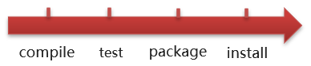当我们执行 install（安装）命令时，它会先执行 compile命令，再执行 test 命令，再执行 package 命令，最后执行 install 命令。
当我们执行 package （打包）命令时，它会先执行 compile 命令，再执行 test 命令，最后执行 package 命令。
默认的生命周期也有对应的很多命令，其他的一般都不会使用，我们只关注常用的：

1.4 IDEA使用Maven
以后开发中我们肯定会在高级开发工具中使用Maven管理项目，而我们常用的高级开发工具是IDEA，所以接下来我们会讲解Maven在IDEA中的使用。
1.4.1 IDEA配置Maven环境
我们需要先在IDEA中配置Maven环境：
选择 IDEA中 File –> Settings

搜索 maven
设置 IDEA 使用本地安装的 Maven，并修改配置文件路径
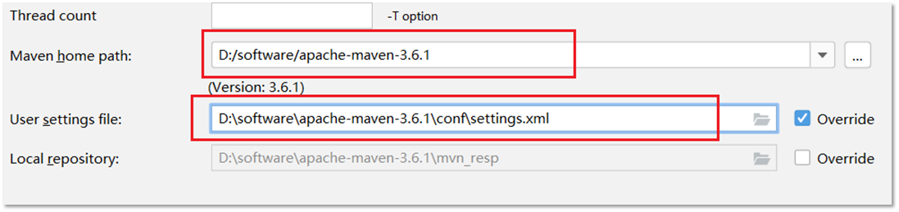
1.4.2 Maven 坐标详解
什么是坐标？
- Maven 中的坐标是==资源的唯一标识==
- 使用坐标来定义项目或引入项目中需要的依赖
Maven 坐标主要组成
- groupId：定义当前Maven项目隶属组织名称（通常是域名反写，例如：com.itheima）
- artifactId：定义当前Maven项目名称（通常是模块名称，例如 order-service、goods-service）
- version：定义当前项目版本号
如下图就是使用坐标表示一个项目：

==注意：==
- 上面所说的资源可以是插件、依赖、当前项目。
- 我们的项目如果被其他的项目依赖时，也是需要坐标来引入的。
1.4.3 IDEA 创建 Maven项目
创建模块，选择Maven，点击Next
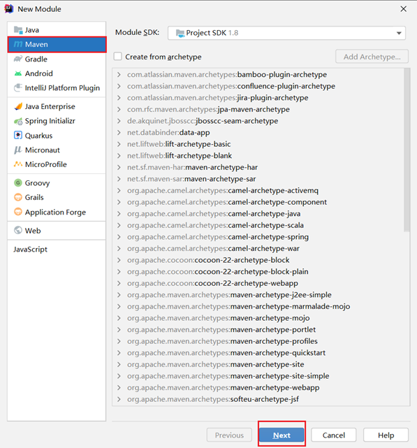填写模块名称，坐标信息，点击finish，创建完成

创建好的项目目录结构如下：

编写 HelloWorld，并运行
1.4.4 IDEA 导入 Maven项目
大家在学习时可能需要看老师的代码，当然也就需要将老师的代码导入到自己的IDEA中。我们可以通过以下步骤进行项目的导入：
选择右侧Maven面板，点击 + 号

选中对应项目的pom.xml文件，双击即可

如果没有Maven面板，选择
View –> Appearance –> Tool Window Bars

可以通过下图所示进行命令的操作：

配置 Maven-Helper 插件
选择 IDEA中 File –> Settings

选择 Plugins
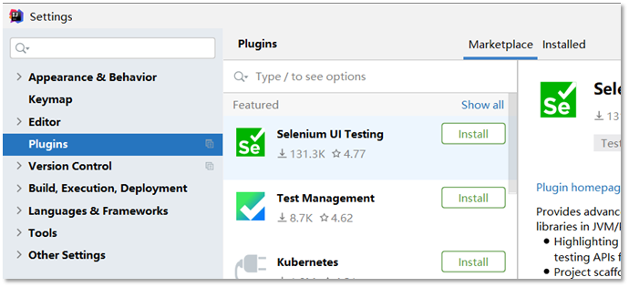搜索 Maven，选择第一个 Maven Helper，点击Install安装，弹出面板中点击Accept
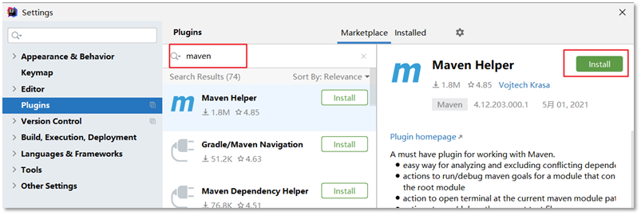重启 IDEA
安装完该插件后可以通过 选中项目右键进行相关命令操作，如下图所示：
1.5 依赖管理
1.5.1 使用坐标引入jar包
使用坐标引入jar包的步骤：
在项目的 pom.xml 中编写
标签 在
标签中 使用 引入坐标 定义坐标的 groupId，artifactId，version
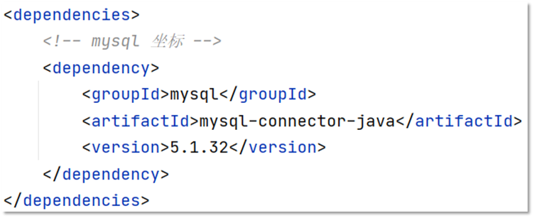点击刷新按钮，使坐标生效

注意：
- 具体的坐标我们可以到如下网站进行搜索
- https://mvnrepository.com/
快捷方式导入jar包的坐标：
每次需要引入jar包，都去对应的网站进行搜索是比较麻烦的，接下来给大家介绍一种快捷引入坐标的方式
在 pom.xml 中 按 alt + insert，选择 Dependency
在弹出的面板中搜索对应坐标，然后双击选中对应坐标
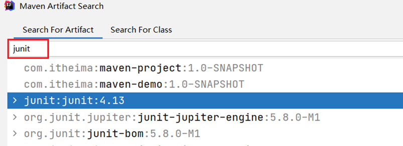点击刷新按钮，使坐标生效
自动导入设置：
上面每次操作都需要点击刷新按钮，让引入的坐标生效。当然我们也可以通过设置让其自动完成
选择 IDEA中 File –> Settings

在弹出的面板中找到 Build Tools
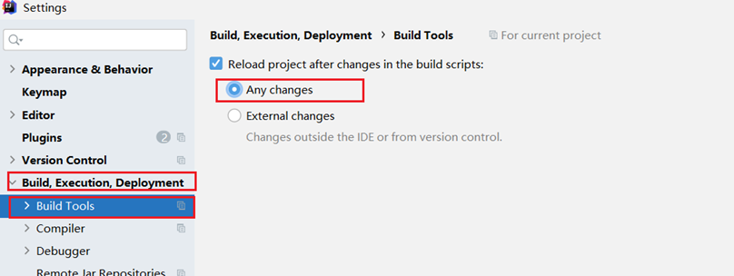选择 Any changes，点击 ok 即可生效
1.5.2 依赖范围
通过设置坐标的依赖范围(scope)，可以设置 对应jar包的作用范围：编译环境、测试环境、运行环境。
如下图所示给 junit 依赖通过 scope 标签指定依赖的作用范围。 那么这个依赖就只能作用在测试环境，其他环境下不能使用。

那么 scope 都可以有哪些取值呢？
| 依赖范围 | 编译classpath | 测试classpath | 运行classpath | 例子 |
|---|---|---|---|---|
| compile | Y | Y | Y | logback |
| test | - | Y | - | Junit |
| provided | Y | Y | - | servlet-api |
| runtime | - | Y | Y | jdbc驱动 |
| system | Y | Y | - | 存储在本地的jar包 |
- compile ：作用于编译环境、测试环境、运行环境。
- test ： 作用于测试环境。典型的就是Junit坐标，以后使用Junit时，都会将scope指定为该值
- provided ：作用于编译环境、测试环境。我们后面会学习
servlet-api，在使用它时，必须将scope设置为该值，不然运行时就会报错 - runtime ： 作用于测试环境、运行环境。jdbc驱动一般将
scope设置为该值，当然不设置也没有任何问题
注意：
- 如果引入坐标不指定
scope标签时，默认就是 compile 值。以后大部分jar包都是使用默认值。
2，Mybatis
2.1 Mybatis概述
2.1.1 Mybatis概念
MyBatis 是一款优秀的==持久层框架==，用于简化 JDBC 开发
MyBatis 本是 Apache 的一个开源项目iBatis, 2010年这个项目由apache software foundation 迁移到了google code，并且改名为MyBatis 。2013年11月迁移到Github
持久层：
负责将数据到保存到数据库的那一层代码。
以后开发我们会将操作数据库的Java代码作为持久层。而Mybatis就是对jdbc代码进行了封装。
JavaEE三层架构：表现层、业务层、持久层
三层架构在后期会给大家进行讲解，今天先简单的了解下即可。
框架：
- 框架就是一个半成品软件，是一套可重用的、通用的、软件基础代码模型
- 在框架的基础之上构建软件编写更加高效、规范、通用、可扩展
举例给大家简单的解释一下什么是半成品软件。大家小时候应该在公园见过给石膏娃娃涂鸦

如下图所示有一个石膏娃娃，这个就是一个半成品。你可以在这个半成品的基础上进行不同颜色的涂鸦
了解了什么是Mybatis后，接下来说说以前 JDBC代码 的缺点以及Mybatis又是如何解决的。
2.1.2 JDBC 缺点
下面是 JDBC 代码，我们通过该代码分析都存在什么缺点：

硬编码
注册驱动、获取连接
上图标1的代码有很多字符串，而这些是连接数据库的四个基本信息，以后如果要将Mysql数据库换成其他的关系型数据库的话，这四个地方都需要修改，如果放在此处就意味着要修改我们的源代码。
SQL语句
上图标2的代码。如果表结构发生变化，SQL语句就要进行更改。这也不方便后期的维护。
操作繁琐
手动设置参数
手动封装结果集
上图标4的代码是对查询到的数据进行封装，而这部分代码是没有什么技术含量，而且特别耗费时间的。
2.1.3 Mybatis 优化
- 硬编码可以配置到==配置文件==
- 操作繁琐的地方mybatis都==自动完成==
如图所示

下图是持久层框架的使用占比。

2.2 Mybatis快速入门
需求：查询user表中所有的数据
创建user表，添加数据
1
2
3
4
5
6
7
8
9
10
11
12
13
14
15
16create database mybatis;
use mybatis;
drop table if exists tb_user;
create table tb_user(
id int primary key auto_increment,
username varchar(20),
password varchar(20),
gender char(1),
addr varchar(30)
);
INSERT INTO tb_user VALUES (1, 'zhangsan', '123', '男', '北京');
INSERT INTO tb_user VALUES (2, '李四', '234', '女', '天津');
INSERT INTO tb_user VALUES (3, '王五', '11', '男', '西安');创建模块，导入坐标
在创建好的模块中的 pom.xml 配置文件中添加依赖的坐标
1
2
3
4
5
6
7
8
9
10
11
12
13
14
15
16
17
18
19
20
21
22
23
24
25
26
27
28
29
30
31
32
33
34
35
36
37
38
39
40
41
42<dependencies>
<!--mybatis 依赖-->
<dependency>
<groupId>org.mybatis</groupId>
<artifactId>mybatis</artifactId>
<version>3.5.5</version>
</dependency>
<!--mysql 驱动-->
<dependency>
<groupId>mysql</groupId>
<artifactId>mysql-connector-java</artifactId>
<version>5.1.46</version>
</dependency>
<!--junit 单元测试-->
<dependency>
<groupId>junit</groupId>
<artifactId>junit</artifactId>
<version>4.13</version>
<scope>test</scope>
</dependency>
<!-- 添加slf4j日志api -->
<dependency>
<groupId>org.slf4j</groupId>
<artifactId>slf4j-api</artifactId>
<version>1.7.20</version>
</dependency>
<!-- 添加logback-classic依赖 -->
<dependency>
<groupId>ch.qos.logback</groupId>
<artifactId>logback-classic</artifactId>
<version>1.2.3</version>
</dependency>
<!-- 添加logback-core依赖 -->
<dependency>
<groupId>ch.qos.logback</groupId>
<artifactId>logback-core</artifactId>
<version>1.2.3</version>
</dependency>
</dependencies>注意：需要在项目的 resources 目录下创建logback的配置文件
编写 MyBatis 核心配置文件 – > 替换连接信息 解决硬编码问题
在模块下的 resources 目录下创建mybatis的配置文件
mybatis-config.xml，内容如下：1
2
3
4
5
6
7
8
9
10
11
12
13
14
15
16
17
18
19
20
21
22
23
24
25
26
27
28
29
30
31
32
33
34
35
36
37
38
39
40
41<?xml version="1.0" encoding="UTF-8" ?>
<!DOCTYPE configuration
PUBLIC "-//mybatis.org//DTD Config 3.0//EN"
"http://mybatis.org/dtd/mybatis-3-config.dtd">
<configuration>
<typeAliases>
<package name="com.itheima.pojo"/>
</typeAliases>
<!--
environments：配置数据库连接环境信息。可以配置多个environment，通过default属性切换不同的environment
-->
<environments default="development">
<environment id="development">
<transactionManager type="JDBC"/>
<dataSource type="POOLED">
<!--数据库连接信息-->
<property name="driver" value="com.mysql.jdbc.Driver"/>
<property name="url" value="jdbc:mysql:///mybatis?useSSL=false"/>
<property name="username" value="root"/>
<property name="password" value="1234"/>
</dataSource>
</environment>
<environment id="test">
<transactionManager type="JDBC"/>
<dataSource type="POOLED">
<!--数据库连接信息-->
<property name="driver" value="com.mysql.jdbc.Driver"/>
<property name="url" value="jdbc:mysql:///mybatis?useSSL=false"/>
<property name="username" value="root"/>
<property name="password" value="1234"/>
</dataSource>
</environment>
</environments>
<mappers>
<!--加载sql映射文件-->
<mapper resource="UserMapper.xml"/>
</mappers>
</configuration>编写 SQL 映射文件 –> 统一管理sql语句，解决硬编码问题
在模块的
resources目录下创建映射配置文件UserMapper.xml，内容如下：1
2
3
4
5
6
7<?xml version="1.0" encoding="UTF-8" ?>
<!DOCTYPE mapper PUBLIC "-//mybatis.org//DTD Mapper 3.0//EN" "http://mybatis.org/dtd/mybatis-3-mapper.dtd">
<mapper namespace="test">
<select id="selectAll" resultType="com.itheima.pojo.User">
select * from tb_user;
</select>
</mapper>编码
在
com.itheima.pojo包下创建 User类1
2
3
4
5
6
7
8
9public class User {
private int id;
private String username;
private String password;
private String gender;
private String addr;
//省略了 setter 和 getter
}在
com.itheima包下编写 MybatisDemo 测试类1
2
3
4
5
6
7
8
9
10
11
12
13
14
15
16
17public class MyBatisDemo {
public static void main(String[] args) throws IOException {
//1. 加载mybatis的核心配置文件，获取 SqlSessionFactory
String resource = "mybatis-config.xml";
InputStream inputStream = Resources.getResourceAsStream(resource);
SqlSessionFactory sqlSessionFactory = new SqlSessionFactoryBuilder().build(inputStream);
//2. 获取SqlSession对象，用它来执行sql
SqlSession sqlSession = sqlSessionFactory.openSession();
//3. 执行sql
List<User> users = sqlSession.selectList("test.selectAll"); //参数是一个字符串，该字符串必须是映射配置文件的namespace.id
System.out.println(users);
//4. 释放资源
sqlSession.close();
}
}
解决SQL映射文件的警告提示：
在入门案例映射配置文件中存在报红的情况。问题如下：

- 产生的原因：Idea和数据库没有建立连接，不识别表信息。但是大家一定要记住，它并不影响程序的执行。
- 解决方式：在Idea中配置MySQL数据库连接。
IDEA中配置MySQL数据库连接
点击IDEA右边框的
Database，在展开的界面点击+选择Data Source，再选择MySQL
在弹出的界面进行基本信息的填写
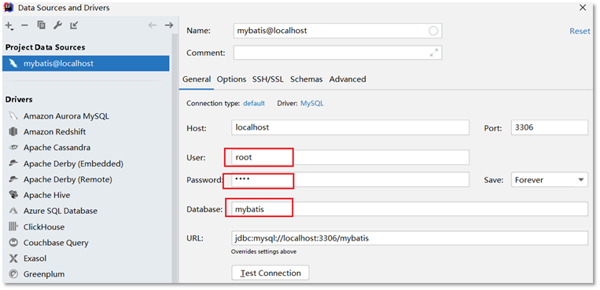点击完成后就能看到如下界面

而此界面就和
navicat工具一样可以进行数据库的操作。也可以编写SQL语句
2.3 Mapper代理开发
2.3.1 Mapper代理开发概述
之前我们写的代码是基本使用方式，它也存在硬编码的问题，如下：
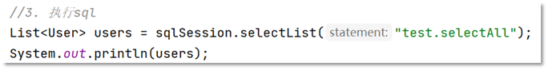这里调用 selectList() 方法传递的参数是映射配置文件中的 namespace.id值。这样写也不便于后期的维护。如果使用 Mapper 代理方式（如下图）则不存在硬编码问题。
通过上面的描述可以看出 Mapper 代理方式的目的：
- 解决原生方式中的硬编码
- 简化后期执行SQL
Mybatis 官网也是推荐使用 Mapper 代理的方式。下图是截止官网的图片

2.3.2 使用Mapper代理要求
使用Mapper代理方式，必须满足以下要求：
定义与SQL映射文件同名的Mapper接口，并且将Mapper接口和SQL映射文件放置在同一目录下。如下图：

设置SQL映射文件的namespace属性为Mapper接口全限定名

在 Mapper 接口中定义方法，方法名就是SQL映射文件中sql语句的id，并保持参数类型和返回值类型一致
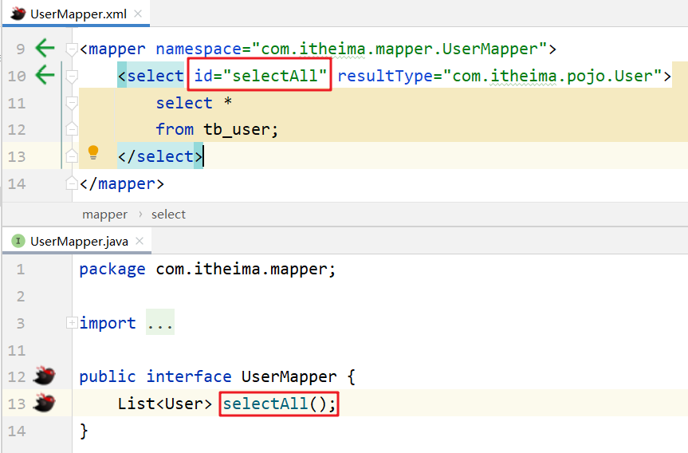
2.3.3 案例代码实现
在
com.itheima.mapper包下创建 UserMapper接口，代码如下：1
2
3
4public interface UserMapper {
List<User> selectAll();
User selectById(int id);
}在
resources下创建com/itheima/mapper目录，并在该目录下创建 UserMapper.xml 映射配置文件1
2
3
4
5
6
7
8
9<!--
namespace:名称空间。必须是对应接口的全限定名
-->
<mapper namespace="com.itheima.mapper.UserMapper">
<select id="selectAll" resultType="com.itheima.pojo.User">
select *
from tb_user;
</select>
</mapper>在
com.itheima包下创建 MybatisDemo2 测试类，代码如下：1
2
3
4
5
6
7
8
9
10
11
12
13
14
15
16
17
18
19
20
21
22
23
24/**
* Mybatis 代理开发
*/
public class MyBatisDemo2 {
public static void main(String[] args) throws IOException {
//1. 加载mybatis的核心配置文件，获取 SqlSessionFactory
String resource = "mybatis-config.xml";
InputStream inputStream = Resources.getResourceAsStream(resource);
SqlSessionFactory sqlSessionFactory = new SqlSessionFactoryBuilder().build(inputStream);
//2. 获取SqlSession对象，用它来执行sql
SqlSession sqlSession = sqlSessionFactory.openSession();
//3. 执行sql
//3.1 获取UserMapper接口的代理对象
UserMapper userMapper = sqlSession.getMapper(UserMapper.class);
List<User> users = userMapper.selectAll();
System.out.println(users);
//4. 释放资源
sqlSession.close();
}
}
==注意：==
如果Mapper接口名称和SQL映射文件名称相同，并在同一目录下，则可以使用包扫描的方式简化SQL映射文件的加载。也就是将核心配置文件的加载映射配置文件的配置修改为
1 | |
2.4 核心配置文件
核心配置文件中现有的配置之前已经给大家进行了解释，而核心配置文件中还可以配置很多内容。我们可以通过查询官网看可以配置的内容

接下来我们先对里面的一些配置进行讲解。
2.4.1 多环境配置
在核心配置文件的 environments 标签中其实是可以配置多个 environment ，使用 id 给每段环境起名，在 environments 中使用 default='环境id' 来指定使用哪儿段配置。我们一般就配置一个 environment 即可。
1 | |
2.4.2 类型别名
在映射配置文件中的 resultType 属性需要配置数据封装的类型（类的全限定名）。而每次这样写是特别麻烦的，Mybatis 提供了 类型别名(typeAliases) 可以简化这部分的书写。
首先需要现在核心配置文件中配置类型别名，也就意味着给pojo包下所有的类起了别名（别名就是类名），不区分大小写。内容如下：
1 | |
通过上述的配置，我们就可以简化映射配置文件中 resultType 属性值的编写
1 | |
作者水平有限，有错误请不吝指正，转载请注明出处！